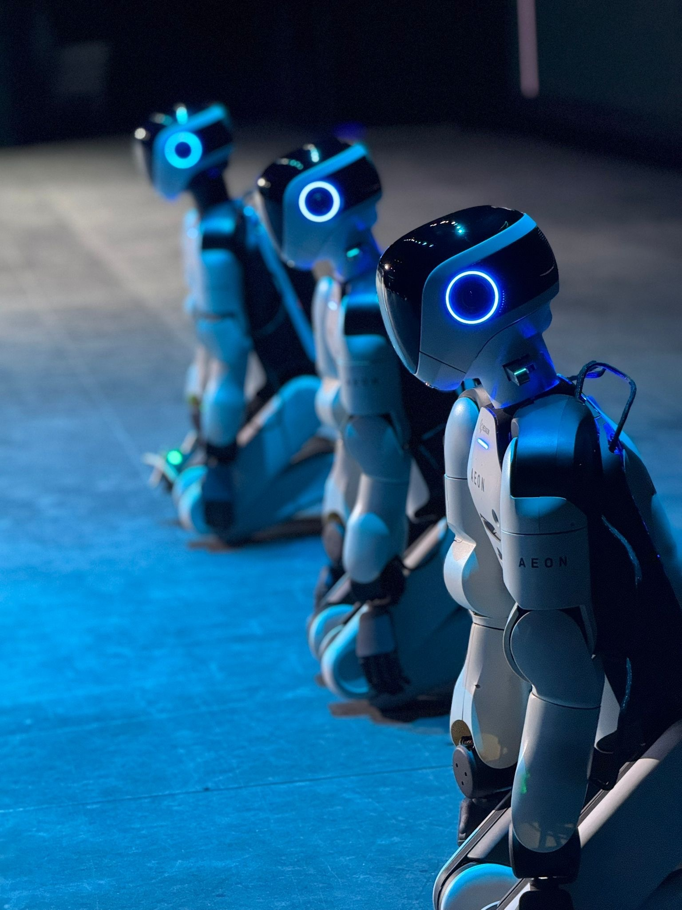
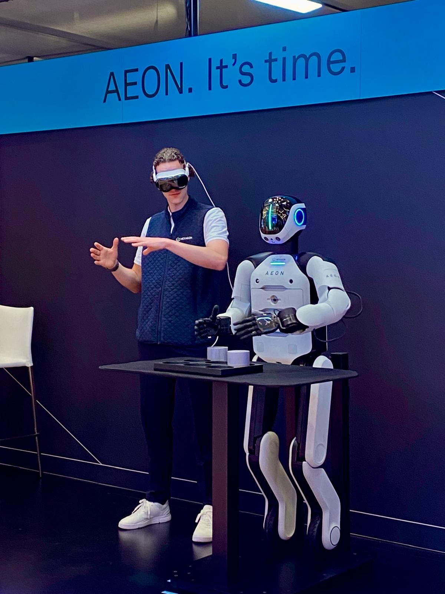
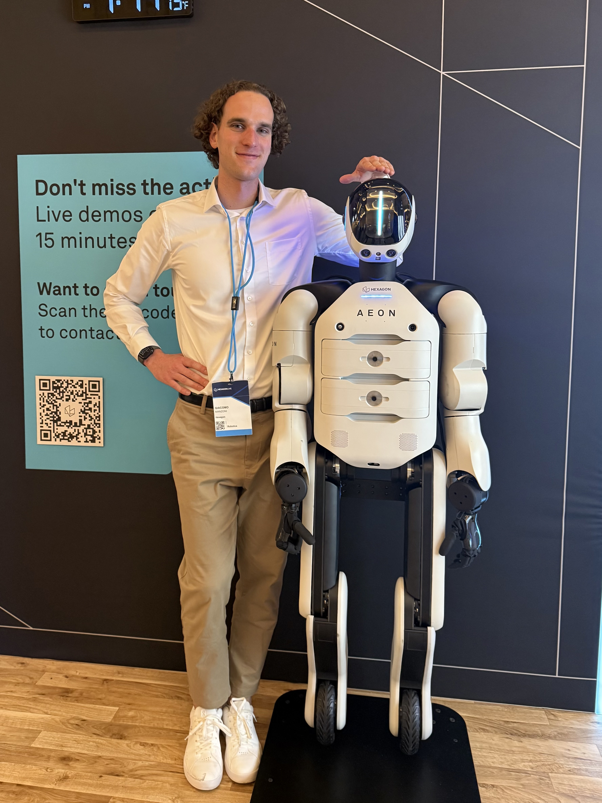
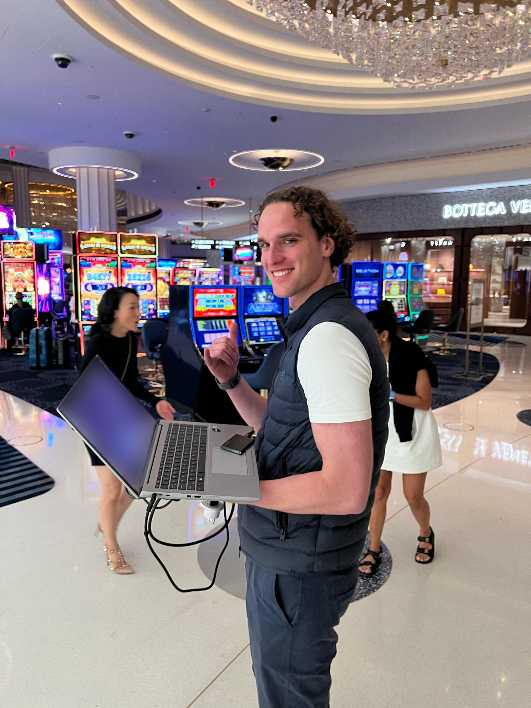

First live humanoid manipulation demo ever. HxGN Live 2025
June 2025
I'll admit the title sounds a little too much like clickbait. But at the time, none of the other big humanoid manufacturers had shown a live imitation learning demo on stage, live streamed worldwide. Many have since been quick to reproduce great results in controlled lab settings, but deploying the technology on the other side of the world was a wild ride.
Presenting the results of a lot of quiet, hard work live on stage was really nerve wracking, and greatly rewarding at the same time. Showing AEON in front of the HexagonLIVE 2025 audience was a milestone moment for the team and for the project.
I feel very lucky and proud of this tangible proof of my hard work. I will always bring these memories with me.



